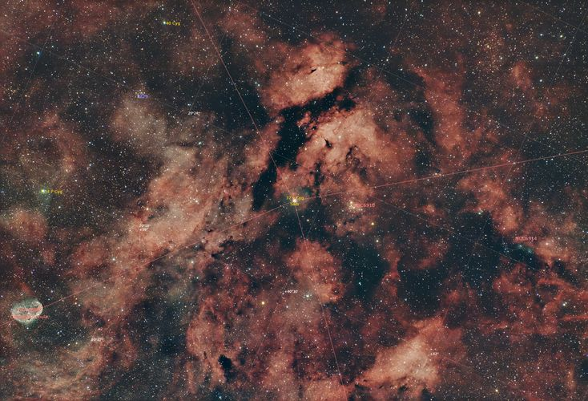
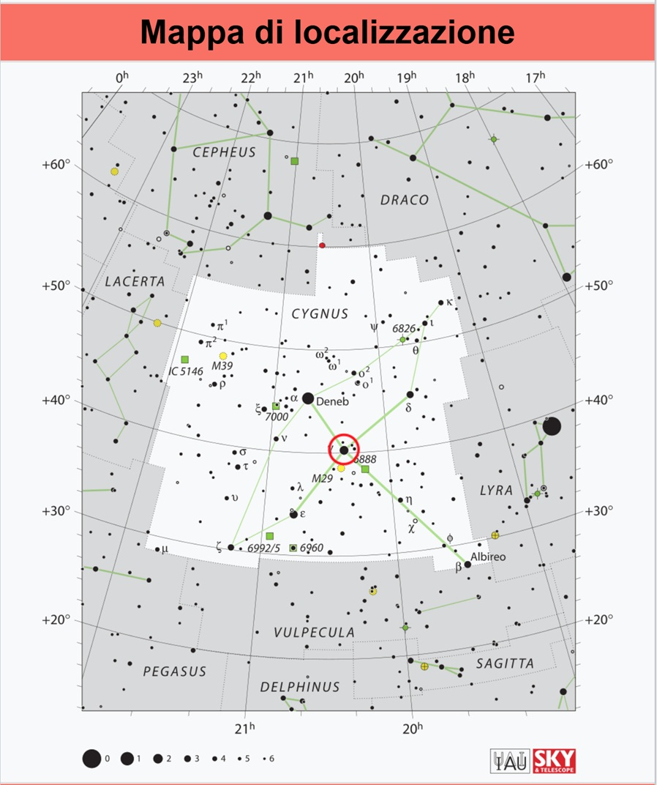

IC 1318 • Regione di Sadr
Complesso di nebulose diffuse nella costellazione del Cigno
IC 1318 • Sadr Region
Complex of diffuse nebulae in Cygnus
IC 1318 è nota come Nebulosa Farfalla, ma non è da confondere con la Nebulosa Farfalla visibile nella costellazione dello Scorpione e catalogata NGC 6302. IC 1318 is known as the Butterfly Nebula, but it should not be confused with the Butterfly Nebula in the constellation of Scorpius, catalogued as NGC 6302.
IC 1318 è un grande complesso di nebulose diffuse e una regione H II che circonda la stella Sadr al centro della Croce del Nord nella costellazione del Cigno, ottenendo così il soprannome di Regione Sadr. IC 1318 is a large complex of diffuse nebulae and an H II region surrounding the star Sadr at the centre of the Northern Cross in Cygnus, giving the area its nickname, the Sadr Region.
È una delle aree nebulose più grandi e massicce della nostra Galassia. Nella stessa area di cielo si osserva un gran numero di oggetti, come la Nebulosa Crescente NGC 6888, visibile in basso a sinistra della foto, alcuni ammassi aperti, il più famoso dei quali è M29, visibile in alto a sinistra, l'ammasso NGC 6910 a destra della stella Sadr e NGC 6914. It is one of the largest and most massive nebular regions in our Galaxy. The same area of sky contains many other objects, including the Crescent Nebula NGC 6888, visible at the lower left of the image, several open clusters, the most famous of which is M29, visible at the upper left, NGC 6910 to the right of Sadr, and NGC 6914.

| Nome Name | IC 1318 – Gamma Cygni Nebula |
| Costellazione Constellation | Cygnus |
| Stella di riferimento Reference Star | Sadr (γ Cygni) |
| Tipo di oggetto Object Type | Complesso di nebulose diffuse / Regione H II Complex of diffuse nebulae / H II Region |
| Oggetti nel campo Objects in the Field | NGC 6888 • M29 • NGC 6910 • NGC 6914 |
IC 1318 si trova nella costellazione del Cigno, attorno alla stella Sadr, al centro della Croce del Nord. La regione è particolarmente ricca di nebulose e ammassi stellari ed è una delle aree più spettacolari del cielo estivo. IC 1318 is located in Cygnus, around the star Sadr at the centre of the Northern Cross. The region is particularly rich in nebulae and star clusters and is one of the most spectacular areas of the summer sky.
La mappa mostra la posizione della regione di Sadr e dei principali riferimenti utili per riconoscere il campo inquadrato. The map shows the position of the Sadr Region and the main reference objects useful for identifying the photographed field.

Ho scelto di riprendere questa ampia regione del Cigno per valorizzare non solo IC 1318 e la stella Sadr, ma anche i numerosi oggetti presenti nello stesso campo, tra cui la Nebulosa Crescente NGC 6888, M29, NGC 6910 e NGC 6914. I chose to photograph this wide region of Cygnus to show not only IC 1318 and the star Sadr, but also the many objects contained in the same field, including the Crescent Nebula NGC 6888, M29, NGC 6910 and NGC 6914.
L'immagine è stata realizzata utilizzando un teleobiettivo Nikon 70-200 f/2.8 abbinato alla camera astronomica ZWO ASI 294 MC Pro. The image was captured using a Nikon 70-200 f/2.8 telephoto lens paired with a ZWO ASI 294 MC Pro astronomy camera.
Tempo totale di integrazione: 1 ora e 32 minuti Total integration time: 1 hour 32 minutes
Le riprese sono state effettuate nella serata del 9 luglio presso Punta Sabbioni Area Sosta Camper, in località Brendo – 28863 Formazza (VB). The images were captured on the evening of 9 July at Punta Sabbioni Camper Area, in the locality of Brendo – 28863 Formazza (VB), Italy.
| ObiettivoLens | Nikon 70-200 f/2.8 |
| Camera principaleMain Camera | ZWO ASI 294 MC Pro |
| Telescopio guidaGuide Scope | 24/120 mm |
| Camera guidaGuide Camera | ZWO ASI 120MM Mini |
| MontaturaMount | Sky-Watcher Star Adventurer GTi |
| AcquisizioneAcquisition | ZWO ASIAIR Pro |
| ElaborazioneProcessing | PixInsight |
L'immagine è stata elaborata in RGB con PixInsight. The image was processed in RGB using PixInsight.
La particolarità di questa ripresa è l'ampiezza del campo inquadrato, che permette di osservare contemporaneamente la Regione Sadr e diversi oggetti del cielo profondo presenti nelle sue vicinanze. The distinctive feature of this image is its wide field of view, which makes it possible to see the Sadr Region together with several deep-sky objects in its surroundings.